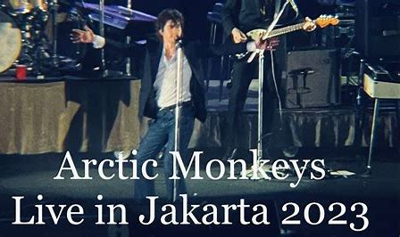

Arctic Monkeys are an English rock band formed in Sheffield on 14 August 2002. The group consists of lead singer Alex Turner, drummer Matt Helders, guitarist Jamie Cook and bassist Nick O'Malley. Former bassist Andy Nicholson left the band in 2006 shortly after their debut album, Whatever People Say I Am, That's What I'm Not, was released.
"505" is a song by English rock band Arctic Monkeys. Written by lead singer and frontman Alex Turner and produced by James Ford and Mike Crossey, it is the closing track on the band's second studio album, Favourite Worst Nightmare (2007).
Arctic Monkeys menjadi headline di Reading Festival 2022, menciptakan kegembiraan besar di kalangan penggemar. Penampilan mereka diprediksi sebagai momen yang tak terlupakan, dengan setlist yang mencakup berbagai hits dari katalog mereka. Kehadiran panggung yang energik dari Alex Turner dan musisi-musisi lainnya diyakini akan memukau penonton. Meskipun detailnya belum tersedia, konser Arctic Monkeys di Reading Festival 2022 diharapkan menjadi sorotan utama acara tersebut.
Arctic Monkeys mengumumkan tur Asia 2023 yang termasuk Indonesia. Tur ini sangat dinanti-nantikan oleh para penggemar. Mereka akan membawakan campuran lagu-lagu hits dan lagu-lagu terbaru mereka. Penampilan panggung yang dinamis dan karisma Alex Turner akan membuat konser ini tak terlupakan bagi penonton Indonesia. Tur ini memberikan kesempatan langka bagi penggemar di Indonesia untuk menikmati performa langsung dari Arctic Monkeys.
